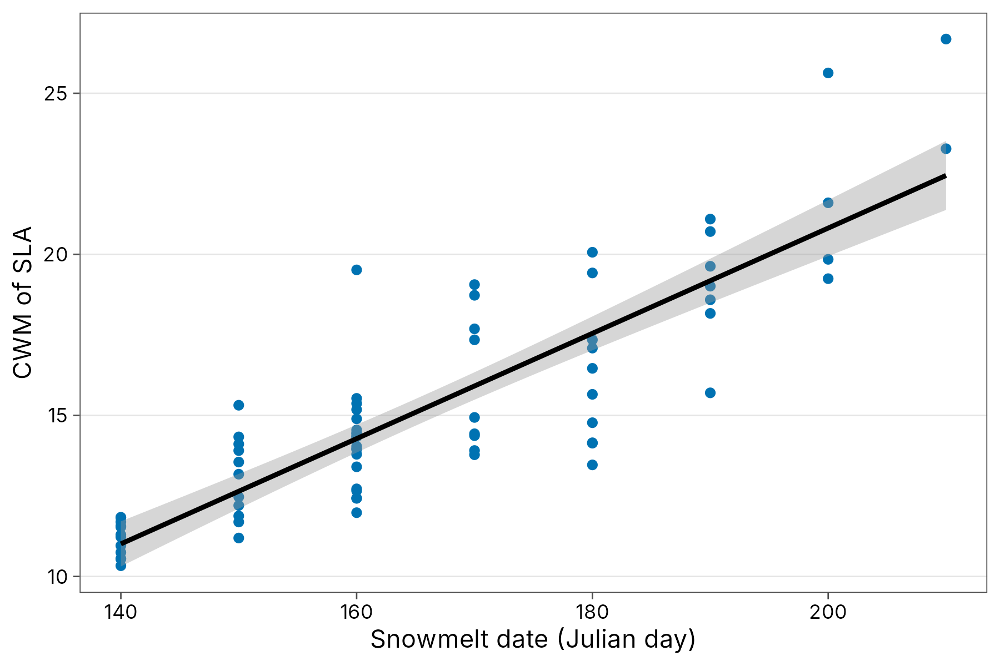
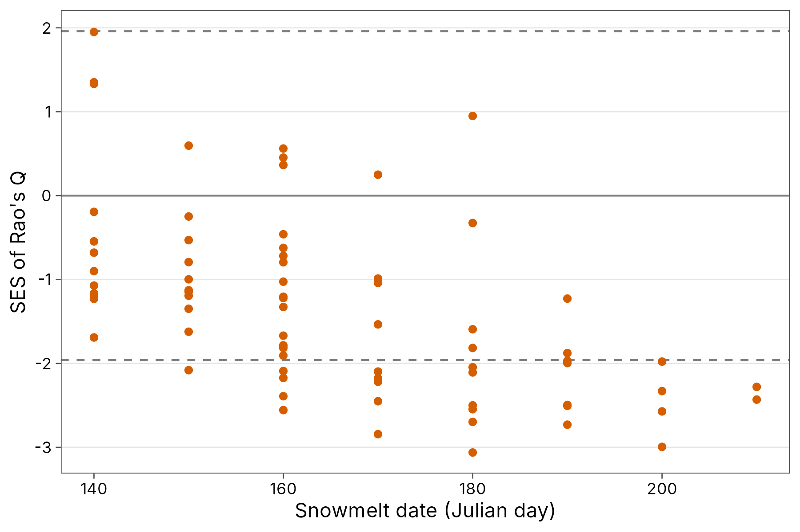

This article follows the R material of the Handbook of Trait-Based Ecology (de Bello et al. 2021) and shows the tidydiversity version of each method. It covers:
- trait dissimilarity:
trait_dist(); - community-weighted means:
trait_cwm(), and testing them withtrait_cwm_test(); - functional diversity indices:
trait_fd_indices(); - alpha, beta and gamma functional diversity:
trait_rao(); - null models:
trait_ses(); - intraspecific trait variability:
trait_itv(); - trait-environment links:
trait_fourth_corner(); - trait probability densities:
trait_tpd(),trait_tpd_dissim(); - phylogenetic signal and distances:
phylo_signal(),phylo_dist(),phylo_combine_dist().
Data
No published trait data set exists yet for the Papua New Guinea communities in tidydiversity, so this article uses two published data sets. Both are loaded from their original sources and are not copied into tidydiversity.
Alpine plants of the Aravo valley, French Alps
(Choler 2005; in the ade4 package): 82 species, 75 sites, 8 traits.
Snow is the mean snowmelt date (Julian day), a strong
gradient in alpine vegetation.
aravo <- data_aravo()
aravo$community
#> # A tibble: 1,288 x 9
#> site species cover Aspect Slope Form PhysD ZoogD Snow
#> <chr> <chr> <int> <int> <int> <fct> <int> <fct> <int>
#> 1 AR26 Agro.rupe 3 5 0 3 20 no 140
#> 2 AR22 Agro.rupe 2 5 10 3 70 no 160
#> 3 AR28 Agro.rupe 3 1 5 3 60 no 150
#> 4 AR01 Agro.rupe 1 9 30 3 30 no 140
#> 5 AR23 Agro.rupe 2 5 10 3 20 some 140
#> 6 AR08 Agro.rupe 3 8 20 3 60 some 160
#> 7 AR12 Agro.rupe 2 9 5 3 40 no 150
#> 8 AR61 Agro.rupe 3 8 15 4 10 no 150
#> 9 AR49 Agro.rupe 2 5 2 1 65 no 150
#> 10 AR50 Agro.rupe 1 5 0 1 40 no 160
#> # i 1,278 more rows
aravo$traits
#> # A tibble: 82 x 9
#> species Height Spread Angle Area Thick SLA N_mass Seed
#> <chr> <dbl> <int> <int> <dbl> <dbl> <dbl> <dbl> <dbl>
#> 1 Agro.rupe 6 10 80 60 0.12 8.1 219. 0.08
#> 2 Alop.alpi 5 20 20 191. 0.2 15.1 204. 0.21
#> 3 Anth.nipp 15 5 50 280 0.08 18 220. 0.54
#> 4 Heli.sede 0 30 80 600 0.2 10.6 233. 1.72
#> 5 Aven.vers 12 30 60 420 0.14 12.5 156. 1.17
#> 6 Care.rosa 30 20 80 180 0.4 6.5 209. 1.68
#> 7 Care.foet 12 40 45 280 0.14 19 397. 0.23
#> 8 Care.parv 25 10 80 520 0.2 13.7 237. 0.61
#> 9 Care.rupe 9 5 70 75 0.2 8.8 181. 0.64
#> 10 Care.semp 20 20 50 600 0.2 11.5 183. 0.83
#> # i 72 more rowsTrait dissimilarity
Gower distance handles any mix of trait types and missing values.
method = "gawdis" balances the contribution of each trait
(de Bello et al. 2021b):
d_gower <- trait_dist(aravo$traits)
d_gawdis <- trait_dist(aravo$traits, method = "gawdis")Community-weighted means
cwm <- trait_cwm(aravo$community, aravo$traits, abundance = cover)
cwm
#> # A tibble: 600 x 9
#> site trait cwm Aspect Slope Form PhysD ZoogD Snow
#> <chr> <chr> <dbl> <int> <int> <fct> <int> <fct> <int>
#> 1 AR26 Height 8.80 5 0 3 20 no 140
#> 2 AR22 Height 7.77 5 10 3 70 no 160
#> 3 AR28 Height 8.35 1 5 3 60 no 150
#> 4 AR01 Height 8.68 9 30 3 30 no 140
#> 5 AR23 Height 11.5 5 10 3 20 some 140
#> 6 AR08 Height 7.02 8 20 3 60 some 160
#> 7 AR12 Height 6.71 9 5 3 40 no 150
#> 8 AR61 Height 6.38 8 15 4 10 no 150
#> 9 AR49 Height 6.90 5 2 1 65 no 150
#> 10 AR50 Height 6.78 5 0 1 40 no 160
#> # i 590 more rows
cwm |>
filter(trait == "SLA") |>
ggplot(aes(Snow, cwm)) +
geom_point(colour = "#0072B2") +
geom_smooth(method = "lm", formula = y ~ x, colour = "black") +
labs(x = "Snowmelt date (Julian day)", y = "CWM of SLA") +
theme_tidydiversity()
A standard regression of CWM on the environment gives p-values that are too optimistic, because all sites share the same species traits (Zeleny 2018). The max test combines a test that shuffles sites with one that shuffles traits among species, and reports the larger p-value:
trait_cwm_test(aravo$community, aravo$traits,
abundance = cover,
cols = c(Height, SLA, N_mass, Seed), env_vars = Snow
)
#> # A tibble: 4 x 6
#> trait variable r p_row p_col p_max
#> <chr> <chr> <dbl> <dbl> <dbl> <dbl>
#> 1 Height Snow -0.737 0.001 0.021 0.021
#> 2 SLA Snow 0.864 0.001 0.001 0.001
#> 3 N_mass Snow 0.871 0.001 0.001 0.001
#> 4 Seed Snow -0.765 0.001 0.008 0.008Sites with late snowmelt have shorter plants with higher SLA and leaf N.
Functional diversity indices
These are the indices of FD::dbFD(), returned as a tidy
table. They complement the Hill-number functional diversity of
div_hill().
fd <- trait_fd_indices(aravo$community, aravo$traits,
abundance = cover, dist = d_gawdis
)
fd |>
group_by(index) |>
summarise(mean = mean(value), sd = sd(value))
#> # A tibble: 5 x 3
#> index mean sd
#> <chr> <dbl> <dbl>
#> 1 FDis 0.120 0.0193
#> 2 FDiv 0.778 0.0489
#> 3 FEve 0.862 0.0409
#> 4 FRic 0.00174 0.00128
#> 5 RaoQ 0.0171 0.00550Alpha, beta and gamma functional diversity
Rao’s quadratic entropy partitioned with the equivalent-numbers correction (de Bello et al. 2010):
trait_rao(aravo$community, abundance = cover, dist = d_gawdis)
#> # A tibble: 3 x 4
#> component rao equivalent beta_prop
#> <chr> <dbl> <dbl> <dbl>
#> 1 alpha 0.313 1.46 NA
#> 2 beta NA 1.08 0.0710
#> 3 gamma 0.362 1.57 NANull models
Is functional diversity lower than expected (convergence, as under
environmental filtering) or higher (divergence, as under limiting
similarity)? trait_ses() compares each site with
communities whose traits are shuffled among species:
ses <- trait_ses(aravo$community, aravo$traits,
abundance = cover, dist = d_gawdis, times = 199
)
ses |>
left_join(distinct(aravo$community, site, Snow), by = "site") |>
ggplot(aes(Snow, ses)) +
geom_hline(yintercept = c(-1.96, 0, 1.96), linetype = c(2, 1, 2),
colour = "grey50") +
geom_point(colour = "#D55E00") +
labs(x = "Snowmelt date (Julian day)", y = "SES of Rao's Q") +
theme_tidydiversity()
Most sites are less functionally diverse than expected, and the convergence gets stronger with later snowmelt: in the harshest snowbeds, many sites fall below -1.96. This is the pattern expected from environmental filtering (Choler 2005).
Other null models are null = "richness" (shuffle
abundances within sites) and null = "swap" (independent
swap keeping site and species totals).
Fourth-corner analysis
The fourth-corner method tests every trait x environment association directly, also with the max test (ter Braak et al. 2012):
trait_fourth_corner(aravo$community, aravo$traits,
abundance = cover,
cols = c(Height, SLA, N_mass), env_vars = c(Snow, PhysD)
)
#> # A tibble: 6 x 5
#> trait variable statistic p.value p.adj
#> <chr> <chr> <dbl> <dbl> <dbl>
#> 1 Height Snow -0.272 0.007 0.0084
#> 2 Height PhysD 0.113 0.058 0.058
#> 3 SLA Snow 0.481 0.001 0.002
#> 4 SLA PhysD -0.276 0.001 0.002
#> 5 N_mass Snow 0.429 0.001 0.002
#> 6 N_mass PhysD -0.212 0.002 0.003Intraspecific trait variability
This method needs traits measured in each site. The data are from Mediterranean annual grasslands near Madrid (Carmona et al. 2015), as distributed with the Handbook: 10 quadrats along an 80 m slope, with height and SLA measured on individual plants in each quadrat. They are read from the Handbook’s repository (GPL-3).
base <- "https://raw.githubusercontent.com/larsito/traitbook_data/main/chapter6/"
indiv <- read.table(paste0(base, "Traits.txt"), header = TRUE) |>
rename(quadrat = Plot, species = Species, height = Height, sla = SLA)
cover <- read.table(paste0(base, "CommMatrix.txt"), header = TRUE)
grass <- tibble(
quadrat = rep(as.integer(rownames(cover)), ncol(cover)),
species = rep(colnames(cover), each = nrow(cover)),
cover = unlist(cover, use.names = FALSE)
) |>
filter(cover > 0) |>
mutate(position = quadrat)How much of the change in community trait means along the slope comes from species turnover, and how much from plants of the same species differing between quadrats (Leps et al. 2011)?
itv <- trait_itv(grass, indiv,
site = quadrat, abundance = cover,
cols = c(height, sla), formula = ~position
)
itv
itv |>
filter(component != "total") |>
ggplot(aes(trait, prop, fill = component)) +
geom_col() +
labs(x = NULL, y = "Share of variation explained by position") +
scale_fill_tidydiversity() +
theme_tidydiversity()Most of the response of SLA to the slope is intraspecific: the same species change their leaves along the gradient. Studies that use a single mean trait value per species would miss most of it.
Trait probability densities
The TPD approach describes each species by the probability density of its trait values, estimated from the individual measurements (Carmona et al. 2016, 2019), so intraspecific variability is part of every index. With the same grassland data:
indiv <- indiv |> mutate(log_height = log(height), log_sla = log(sla))
tpd <- trait_tpd(grass, indiv,
site = quadrat, abundance = cover, cols = c(log_height, log_sla)
)
tpd |>
left_join(distinct(grass, quadrat = as.character(quadrat), position),
by = "quadrat") |>
arrange(position)trait_tpd_dissim() gives the functional dissimilarity
between quadrats and splits it into the part due to different use of
shared trait space and the part due to non-shared trait space:
trait_tpd_dissim(grass, indiv,
site = quadrat, abundance = cover, cols = c(log_height, log_sla)
) |>
arrange(desc(dissimilarity)) |>
head()The species densities are estimated with TPD::TPDs()
(kernel density estimation with a plug-in bandwidth, package ks).
Everything after that (community densities, richness, evenness,
divergence, redundancy and dissimilarity) is computed in tidydiversity
with matrix algebra. The results are identical to those of the TPD
package.
Phylogenetic signal
Do closely related species have similar traits? The Handbook’s chapter 8 data combine the DaPhnE phylogeny of the Central European flora (Durka and Michalski 2012) with leaf-height-seed traits from the LEDA database (Kleyer et al. 2008):
base8 <- "https://raw.githubusercontent.com/larsito/traitbook_data/main/chapter8/"
tree <- ape::read.tree(paste0(base8, "DaPhnE_01.tre"))
lhs <- read.table(paste0(base8, "lhs.txt"), header = TRUE)
lhs$species <- gsub(" ", "_", rownames(lhs))
phylo_signal(lhs, tree, cols = c(log_sla, log_height, log_sm))Blomberg’s K is far below 1 for all three traits: they carry much
less phylogenetic signal than expected under Brownian motion, although
seed mass and height are more conserved than SLA. All three are still
significantly greater than zero (p = 0.001). K is computed with
phylogenetic independent contrasts, so the randomisation test is fast
even for this tree of 5122 species. The values are identical to those of
phytools::phylosig().
Phylogenetic distances (phylo_dist()) can replace trait
distances in trait_rao(), trait_ses() or
trait_fd_indices(), and phylo_combine_dist()
merges trait and phylogenetic distances into one.
References
Carmona, C. P. et al. (2015). Fine-scale trait structure along a productivity gradient: intraspecific variability makes the difference. Journal of Vegetation Science, 26, 1101-1111.
Carmona, C. P. et al. (2016). Traits without borders: integrating functional diversity across scales. Trends in Ecology & Evolution, 31, 382-394.
Carmona, C. P. et al. (2019). Trait probability density (TPD): measuring functional diversity across scales based on TPD with R. Ecology, 100, e02876.
Choler, P. (2005). Consistent shifts in Alpine plant traits along a mesotopographical gradient. Arctic, Antarctic, and Alpine Research, 37, 444-453.
de Bello, F. et al. (2010). The partitioning of diversity: showing Theseus a way out of the labyrinth. Journal of Vegetation Science, 21, 992-1000.
de Bello, F., Carmona, C. P., Dias, A. T. C., Götzenberger, L., Moretti, M. and Berg, M. P. (2021). Handbook of Trait-Based Ecology: From Theory to R Tools. Cambridge University Press.
de Bello, F. et al. (2021b). Towards a more balanced combination of multiple traits when computing functional differences between species. Methods in Ecology and Evolution, 12, 443-448.
Durka, W. and Michalski, S. G. (2012). Daphne: a dated phylogeny of a large European flora for phylogenetically informed ecological analyses. Ecology, 93, 2297.
Kleyer, M. et al. (2008). The LEDA Traitbase: a database of life-history traits of the Northwest European flora. Journal of Ecology, 96, 1266-1274.
Leps, J. et al. (2011). Community trait response to environment: disentangling species turnover vs intraspecific trait variability effects. Ecography, 34, 856-863.
ter Braak, C. J. F., Cormont, A. and Dray, S. (2012). Improved testing of species traits-environment relationships in the fourth-corner problem. Ecology, 93, 1525-1526.
Zeleny, D. (2018). Which results of the standard test for community-weighted mean approach are too optimistic? Journal of Vegetation Science, 29, 953-966.